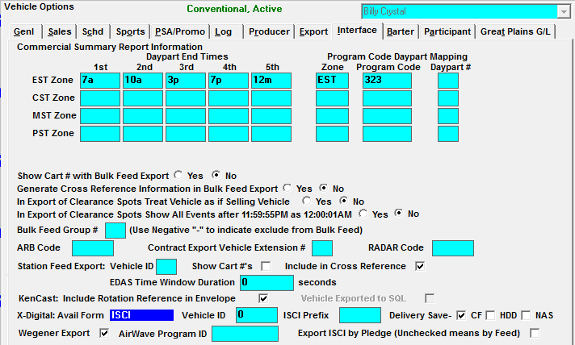
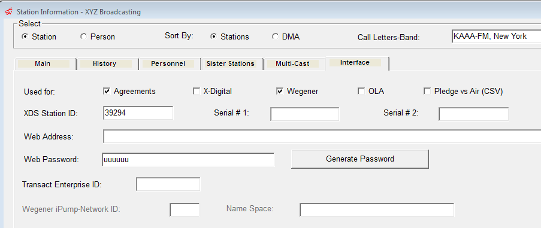

Wegener Setup
Wegener Setup
There are a few settings that need to be activated in Traffic and Affiliate, and group names/codes that must be entered in the Affiliate system.
XML.INI
The XML.INI file is where the Wegener definitions are set up. All definitions except for the “Export =” are defined by Wegener. The Wegener export will go to a new folder, CSI\Prod\XML Exports\Wegener XML Exports. This allows you to keep multiple exports separate.
Place the XML.INI file that Counterpoint has given you into the Counterpoint Data directory (CSI\PROD\DATA).
Example XML.INI
[Wegener]
XMLVersion = 1.0
XMLEncoding = utf-8
Playlist_Schedule = xmlns:msdata=http://www.../xml/g xsi:SchemaLocation = “http://www..../xml/g” Rx_Group_Membership = xmlns=http://www..../xml/gr xmlns:xsi=http://www.... xsi:schemaLocation=”http://www.../gr”
MP2FilePath = /Assets/Spots
Export = \csi\prod\XML Exports\Wegner XML Exports
Affiliat.ini
Should you need the audio extension to be different than mp2, you can enter the correct audio extension name in the Affiliat.ini file.
The audio extension can be any of the following: Xxx, “Xxx”, .Xxx, or “.Xxx”. The extension is capitalized.
Traffic System Setup
There are a minimum of two options that must be activated in Traffic -> Site Options.
Site Options -> Options
In the Site Options -> Opt (options) tab, turn on the Split Copy Option feature if applicable.
Site Options -> Automation
In the Site Options -> Auto (Automation) tab, turn on the Wegener Compel Export.
If a prefix code is defined in the “Prefix to dynamically generated Wegener group names” field, that code will precede the group names on the Wegener export. If left blank, a W will precede the names. This prefix comes from Wegener.
Vehicle Options Interface
In the Vehicle Options -> General tab, indicate that the vehicle can receive Split Copy.
In the Vehicle Options -> Export tab, activate the Wegener-Compel interface.
If the feed to an affiliate is live, the Interface table needs to be defined. Note: Wegener assumes all spot times are Eastern.

Affiliate System Setup
Clean-Up
From the File>Utilities drop down in the upper left corner, run the Clean-up Station Information to remove any duplicate and unused names from the database.
Press “Fix” to remove duplicate or unused names.
Verify Bands Exist
Verify that all stations have band letters defined (-AM or -FM), by reviewing the Station Information Report for all stations.
Define Group Names
The Group Names (in the upper left corner of the screen) need to be coordinated between you and Wegener. The Export ID and Group Names are provided by Wegener.
Group Procedures
From the Reports Screen, print the Groups report for each of the categories.
Provide Wegener with a list of the names from the Group Report
After they have reviewed the list, they will give you a final list of their group names
Each must be entered into the Affiliate System
Once you have defined the Group names for all stations, print a new set of Group reports
Check each report to be sure there are no missing Group ID #s and the correct Group Name is associated with the correct name
Group Name Items
Each group type must have the names defined to match those supplied by Wegener in the Group Names Drop Down. Select each group and fill in the group name fields based on the list provided by Wegener.
Select the desired group: DMA Market, Format, MSA Market, Time Zone, State, or Vehicle. Enter the Group name, and save after every entry.
Vehicle
Select the Vehicle Name and enter the Export ID and Group Name. The Export ID is used as part of the file name when Counterpoint creates the export file. Only those vehicles set up to use the Wegener interface in the Traffic System will appear in the drop down. Repeat for all vehicles defined as Wegener in the Traffic System. Save after each entry.
When using the same group name for more multiple vehicles, a warning message will appear when you press Save, asking if you are sure you want to use a duplicate group name.
Station Interface
Turn Wegener on for each station that will be receiving audio instructions through Wegener in the Stations -> Interface tab.

Agreements
Each Wegener station must have an active Affiliate Agreement to allow posted spots to be imported into the Counterpoint Software Electronic Affidavit System. Follow the standard procedure for entering Agreements for each Wegener station.